session_hand_6 · 全部 20 帧网格表面检查
固定流程结果复核 · 2026-10-10 · cam3 / cam4 各 10 帧
“局部表面交叉”指三维网格中，前臂或手腕接缝附近的三角形穿过另一个不共享顶点的三角形。普通二维投影重叠不一定存在三维穿插。本页用保存的三维检查记录定位涉及的三角形，再将它们标红，方便查找。
检查范围：至少一个三角形接触前臂／腕口检查区域，另一面可来自整个身体。排除共享顶点的三角形；不覆盖共面重叠、纯接触和全身所有碰撞。数值表示交叉三角形对数，不是独立缺陷个数；左右侧可能重复命中同一对。
“前 → 后”分别是 MANO 辅助身体优化之前的自动腕点／轮廓融合基线，与增强身体＋原接缝后的最终结果；不能把变化全部归因于接缝一个步骤。红色显示涉及交叉的面，不是交叉线或穿透深度，且不做遮挡隐藏。
原 20 帧汇总图 · 20 帧标记汇总图 · 下载单文件离线版 · 下载检查表 CSV · 数据与来源
全部 20 帧检查清单（点击名称定位）
| 组别 / 相机 | 时间 s | 最终局部检查 | 左侧：前 → 后 | 右侧：前 → 后 |
|---|---|---|---|---|
| 01 / cam3 | 3.873 | 未通过 | 0 → 0 | 0 → 9 |
| 01 / cam4 | 3.875 | 通过 | 15 → 0 | 0 → 0 |
| 02 / cam3 | 11.636 | 通过 | 0 → 0 | 0 → 0 |
| 02 / cam4 | 11.641 | 未通过 | 112 → 93 | 0 → 0 |
| 03 / cam3 | 19.416 | 未通过 | 26 → 16 | 28 → 19 |
| 03 / cam4 | 19.407 | 通过 | 102 → 0 | 2 → 0 |
| 04 / cam3 | 27.179 | 未通过 | 0 → 0 | 74 → 81 |
| 04 / cam4 | 27.174 | 未通过 | 32 → 12 | 87 → 88 |
| 05 / cam3 | 34.942 | 通过 | 0 → 0 | 0 → 0 |
| 05 / cam4 | 34.940 | 通过 | 0 → 0 | 0 → 0 |
| 06 / cam3 | 42.705 | 通过 | 0 → 0 | 0 → 0 |
| 06 / cam4 | 42.706 | 未通过 | 23 → 0 | 0 → 42 |
| 07 / cam3 | 50.468 | 通过 | 20 → 0 | 0 → 0 |
| 07 / cam4 | 50.473 | 未通过 | 6 → 0 | 84 → 50 |
| 08 / cam3 | 58.248 | 未通过 | 105 → 104 | 0 → 0 |
| 08 / cam4 | 58.239 | 未通过 | 88 → 79 | 102 → 78 |
| 09 / cam3 | 66.010 | 通过 | 0 → 0 | 0 → 0 |
| 09 / cam4 | 66.005 | 未通过 | 94 → 90 | 58 → 30 |
| 10 / cam3 | 73.773 | 未通过 | 91 → 73 | 74 → 42 |
| 10 / cam4 | 73.772 | 未通过 | 57 → 73 | 17 → 40 |
第 01 组 · cam3 · 3.873 s
局部检查未通过交叉三角形对数（身体增强前 → 最终）：左侧 0 → 0 对；右侧 0 → 9 对。最终跨左右检查去重：9 对。
最终身体自动点 RMSE 27.57 px · 手部自动点 RMSE 8.55 px。较小误差不代表表面无穿插。
左右前臂与接缝放大
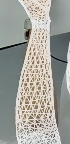
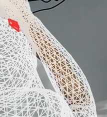
查看原始预测、Sapiens2 身体优化、MANO 辅助身体优化
第 01 组 · cam4 · 3.875 s
局部检查通过交叉三角形对数（身体增强前 → 最终）：左侧 15 → 0 对；右侧 0 → 0 对。最终跨左右检查去重：0 对。
最终身体自动点 RMSE 24.49 px · 手部自动点 RMSE 6.41 px。较小误差不代表表面无穿插。
左右前臂与接缝放大
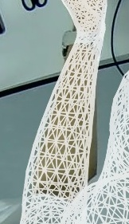
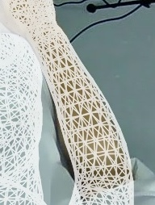
查看原始预测、Sapiens2 身体优化、MANO 辅助身体优化
第 02 组 · cam3 · 11.636 s
局部检查通过交叉三角形对数（身体增强前 → 最终）：左侧 0 → 0 对；右侧 0 → 0 对。最终跨左右检查去重：0 对。
最终身体自动点 RMSE 27.93 px · 手部自动点 RMSE 12.21 px。较小误差不代表表面无穿插。
左右前臂与接缝放大
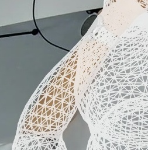
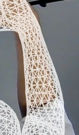
查看原始预测、Sapiens2 身体优化、MANO 辅助身体优化
第 02 组 · cam4 · 11.641 s
局部检查未通过交叉三角形对数（身体增强前 → 最终）：左侧 112 → 93 对；右侧 0 → 0 对。最终跨左右检查去重：93 对。
最终身体自动点 RMSE 11.95 px · 手部自动点 RMSE 11.01 px。较小误差不代表表面无穿插。
左右前臂与接缝放大
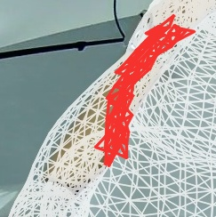
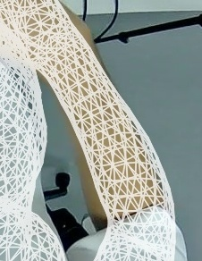
查看原始预测、Sapiens2 身体优化、MANO 辅助身体优化
第 03 组 · cam3 · 19.416 s
局部检查未通过交叉三角形对数（身体增强前 → 最终）：左侧 26 → 16 对；右侧 28 → 19 对。最终跨左右检查去重：35 对。
最终身体自动点 RMSE 9.04 px · 手部自动点 RMSE 9.39 px。较小误差不代表表面无穿插。
左右前臂与接缝放大
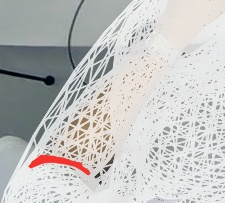
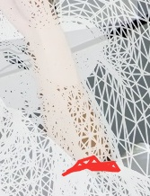
查看原始预测、Sapiens2 身体优化、MANO 辅助身体优化


第 03 组 · cam4 · 19.407 s
局部检查通过交叉三角形对数（身体增强前 → 最终）：左侧 102 → 0 对；右侧 2 → 0 对。最终跨左右检查去重：0 对。
最终身体自动点 RMSE 16.62 px · 手部自动点 RMSE 9.28 px。较小误差不代表表面无穿插。


左右前臂与接缝放大
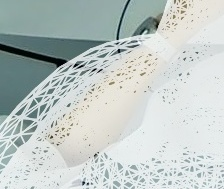
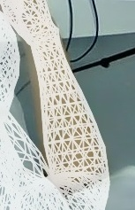
查看原始预测、Sapiens2 身体优化、MANO 辅助身体优化

第 04 组 · cam3 · 27.179 s
局部检查未通过交叉三角形对数（身体增强前 → 最终）：左侧 0 → 0 对；右侧 74 → 81 对。最终跨左右检查去重：81 对。
最终身体自动点 RMSE 25.34 px · 手部自动点 RMSE 11.60 px。较小误差不代表表面无穿插。
左右前臂与接缝放大
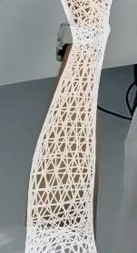
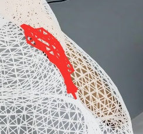
查看原始预测、Sapiens2 身体优化、MANO 辅助身体优化


第 04 组 · cam4 · 27.174 s
局部检查未通过交叉三角形对数（身体增强前 → 最终）：左侧 32 → 12 对；右侧 87 → 88 对。最终跨左右检查去重：100 对。
最终身体自动点 RMSE 21.88 px · 手部自动点 RMSE 11.47 px。较小误差不代表表面无穿插。


第 05 组 · cam3 · 34.942 s
局部检查通过交叉三角形对数（身体增强前 → 最终）：左侧 0 → 0 对；右侧 0 → 0 对。最终跨左右检查去重：0 对。
最终身体自动点 RMSE 31.25 px · 手部自动点 RMSE 13.46 px。较小误差不代表表面无穿插。


第 05 组 · cam4 · 34.940 s
局部检查通过交叉三角形对数（身体增强前 → 最终）：左侧 0 → 0 对；右侧 0 → 0 对。最终跨左右检查去重：0 对。
最终身体自动点 RMSE 28.83 px · 手部自动点 RMSE 12.18 px。较小误差不代表表面无穿插。


第 06 组 · cam3 · 42.705 s
局部检查通过交叉三角形对数（身体增强前 → 最终）：左侧 0 → 0 对；右侧 0 → 0 对。最终跨左右检查去重：0 对。
最终身体自动点 RMSE 18.65 px · 手部自动点 RMSE 12.15 px。较小误差不代表表面无穿插。


第 06 组 · cam4 · 42.706 s
局部检查未通过交叉三角形对数（身体增强前 → 最终）：左侧 23 → 0 对；右侧 0 → 42 对。最终跨左右检查去重：42 对。
最终身体自动点 RMSE 20.36 px · 手部自动点 RMSE 11.67 px。较小误差不代表表面无穿插。


第 07 组 · cam3 · 50.468 s
局部检查通过交叉三角形对数（身体增强前 → 最终）：左侧 20 → 0 对；右侧 0 → 0 对。最终跨左右检查去重：0 对。
最终身体自动点 RMSE 24.42 px · 手部自动点 RMSE 13.53 px。较小误差不代表表面无穿插。


第 07 组 · cam4 · 50.473 s
局部检查未通过交叉三角形对数（身体增强前 → 最终）：左侧 6 → 0 对；右侧 84 → 50 对。最终跨左右检查去重：50 对。
最终身体自动点 RMSE 18.25 px · 手部自动点 RMSE 13.28 px。较小误差不代表表面无穿插。


第 08 组 · cam3 · 58.248 s
局部检查未通过交叉三角形对数（身体增强前 → 最终）：左侧 105 → 104 对；右侧 0 → 0 对。最终跨左右检查去重：104 对。
最终身体自动点 RMSE 21.04 px · 手部自动点 RMSE 12.25 px。较小误差不代表表面无穿插。


第 08 组 · cam4 · 58.239 s
局部检查未通过交叉三角形对数（身体增强前 → 最终）：左侧 88 → 79 对；右侧 102 → 78 对。最终跨左右检查去重：157 对。
最终身体自动点 RMSE 16.39 px · 手部自动点 RMSE 14.04 px。较小误差不代表表面无穿插。


第 09 组 · cam3 · 66.010 s
局部检查通过交叉三角形对数（身体增强前 → 最终）：左侧 0 → 0 对；右侧 0 → 0 对。最终跨左右检查去重：0 对。
最终身体自动点 RMSE 30.16 px · 手部自动点 RMSE 14.47 px。较小误差不代表表面无穿插。


第 09 组 · cam4 · 66.005 s
局部检查未通过交叉三角形对数（身体增强前 → 最终）：左侧 94 → 90 对；右侧 58 → 30 对。最终跨左右检查去重：120 对。
最终身体自动点 RMSE 11.66 px · 手部自动点 RMSE 11.47 px。较小误差不代表表面无穿插。


第 10 组 · cam3 · 73.773 s
局部检查未通过交叉三角形对数（身体增强前 → 最终）：左侧 91 → 73 对；右侧 74 → 42 对。最终跨左右检查去重：115 对。
最终身体自动点 RMSE 12.95 px · 手部自动点 RMSE 8.94 px。较小误差不代表表面无穿插。


第 10 组 · cam4 · 73.772 s
局部检查未通过交叉三角形对数（身体增强前 → 最终）：左侧 57 → 73 对；右侧 17 → 40 对。最终跨左右检查去重：113 对。
最终身体自动点 RMSE 25.70 px · 手部自动点 RMSE 7.59 px。较小误差不代表表面无穿插。


本页仅整理已有结果并添加诊断标记，没有重新优化、修改网格、手动修正关节点或替换输入帧。最终图与流水线交付图逐字节一致。